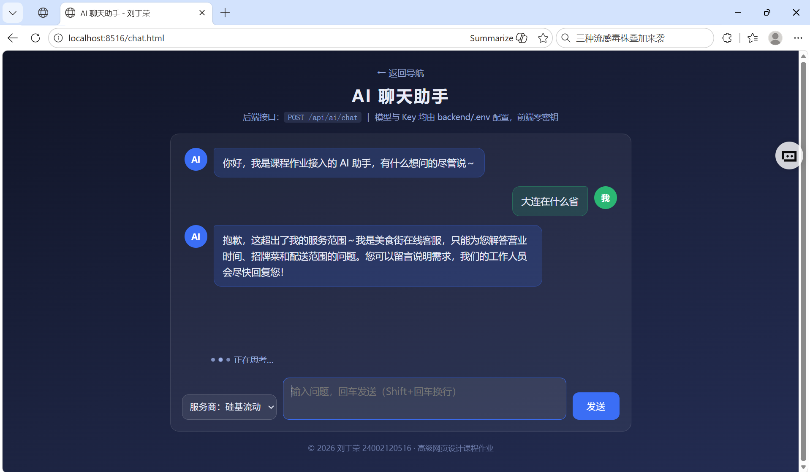
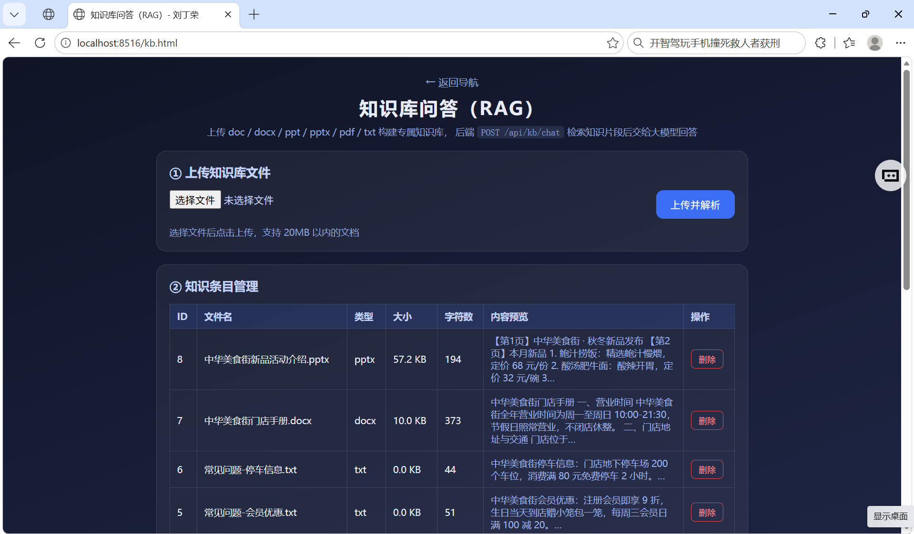
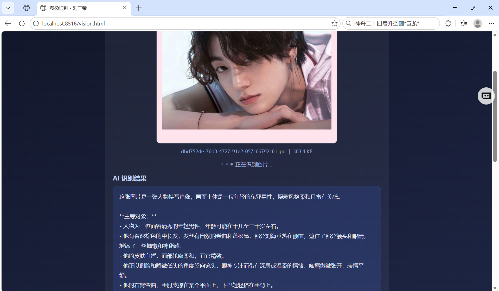
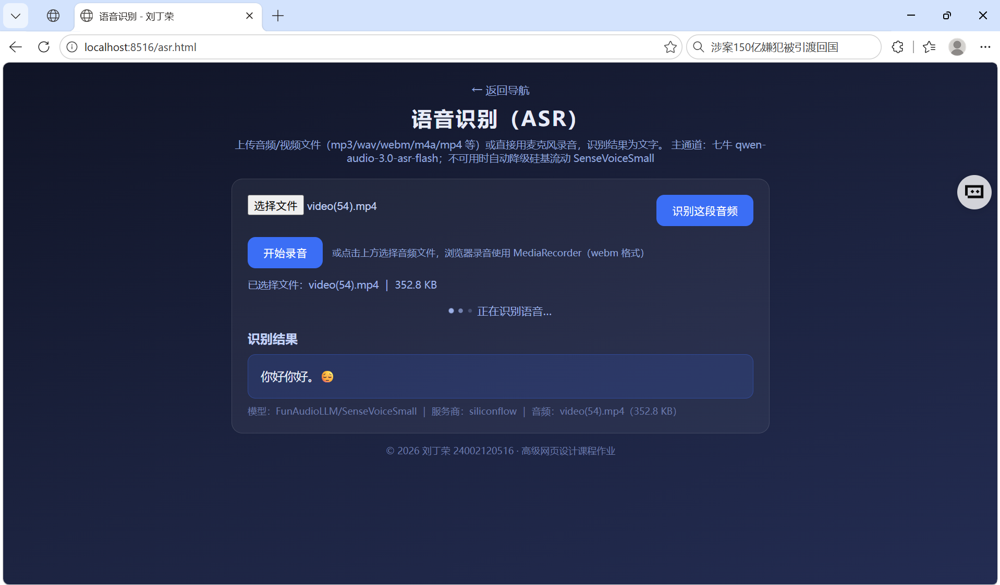

AI TEST / 大模型能力实测
AI 能力实测 · 美食街项目接入大模型
四项 AI 能力全部实测通过：对话问答、知识库检索增强（RAG）、图像理解、语音转文字。 能力统一封装在美食街项目后端，本地服务运行于 localhost:8516，大模型服务由硅基流动提供，以下为各模块实测截图。

对话式客服助手，回答限定在美食街营业时间、招牌菜与配送范围等语境； 超出范围的问题会被礼貌拒绝并引导留言，前端零密钥，模型与 Key 由后端配置。
后端接口：POST /api/ai/chat ｜ 服务商：硅基流动
上传 doc / docx / ppt / pptx / pdf / txt 文档（20MB 以内）构建专属知识库， 提问时先检索命中的知识片段，再交给大模型组织回答——问答结果与店铺真实信息一致； 支持知识条目的查看与删除管理。
后端接口：POST /api/kb/chat ｜ 检索增强：知识片段 + 大模型
上传图片后由多模态视觉模型输出识别结果，包含主体对象、人物特征、 构图视角与画面氛围的完整中文描述——截图中对人物肖像的描述细致到发型、姿态与神态。
能力类型：多模态视觉理解 ｜ 页面：vision.html
上传音频 / 视频文件（mp3 / wav / webm / m4a / mp4）或浏览器直接录音（MediaRecorder，webm 格式）， 识别结果为文字——实测把一段录音准确转写为「你好你好」。
模型：FunAudioLLM / SenseVoiceSmall ｜ 页面：asr.html